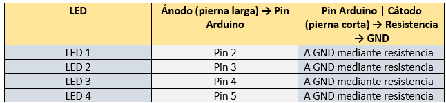

Tinkercad Pasos a seguir:
ACTIVIDAD EN TINKERCAD "ENCENDER Y APAGAR LEDS CADA SEGUNDO"
Objetivo: Aplicar el conocimiento de posiciones y uso de arreglos (arrays) en Arduino para controlar múltiples LEDS, creando patrones visuales como filas, cruces, secuencias animadas o efectos personalizados.
PASO 1: Iniciar sesión en Tinkercad
- Ve a 👉 https://www.tinkercad.com
- Inicia sesión con tu cuenta (Google, correo, etc.)
PASO 2: Crear nuevo circuito
- En el menú superior, haz clic en “Diseños” → “Crear nuevo diseño”
- Selecciona “Circuito”
PASO 3: Agrega componentes
- Desde la barra derecha, arrastra los siguientes componentes al área de trabajo:

PASO 4: Conectar LEDS a Arduino
- Conecta los LEDS y resistencias así:

Tip: Los LEDS tienen polaridad. La pata larga va al pin digital (positivo), la corta al negativo (resistencia a GND).
PASO 5: Agrega el código en Arduino
- Haz clic en la pestaña “Código” (arriba a la derecha)
- ambia de “Bloques” a “Texto”
Borra todo lo que hay y pega este código:
int fila1[] = {2, 3, 4, 5}; // Pines donde están conectados los LEDs
void setup() {
for (int i = 0; i < 4; i++) {
pinMode(fila1[i], OUTPUT); // Establece cada pin como salida
}
}
void loop() {
// Enciende todos los LEDs de la fila
for (int i = 0; i < 4; i++) {
digitalWrite(fila1[i], HIGH);
}
delay(1000); // 1 segundo encendidos
// Apaga todos los LEDs
for (int i = 0; i < 4; i++) {
digitalWrite(fila1[i], LOW);
}
delay(1000); // 1 segundo apagados
}
Infórmate:
- fila1: Contiene los números de los pines digitales donde se conectarán los LEDS.
- void setup: Esta es la función de configuración. Se ejecuta una sola vez al iniciar el programa en el Arduino.
- for: recorre los 4 elementos del arreglo de fila1
- pinMode(OUTPUT): indica que cada uno de esos pines será usado como salida, es decir, enviarán energía para encender los LEDS.
- void loop: se ejecuta en ciclo infinito, es decir, una y otra vez. Todo lo que pongas aquí se repite mientras esté corriendo la simulación.
- delay: Pausa el programa durante 1000 milisegundos (es decir, 1 segundo) con los LEDs encendidos.
- for- high: Este bucle prende todos los LEDs al mismo tiempo, enviando una señal HIGH (encendido) a cada pin del arreglo de fila1.
- for-low: Este bucle apaga todos los LEDs enviando señal LOW (apagado) a los pines 2, 3, 4 y 5. (Todos los LEDS se apagan a la vez).
- loop: hace que el programa repita el proceso: enciende los LEDS por un segundo, apaga los LEDS por 1 segundo y vuelve a empezar.